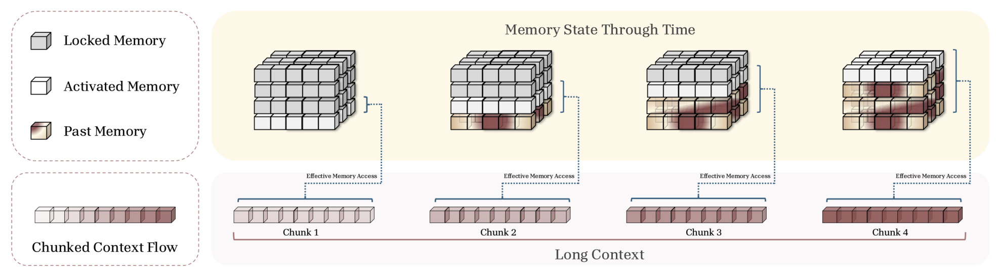
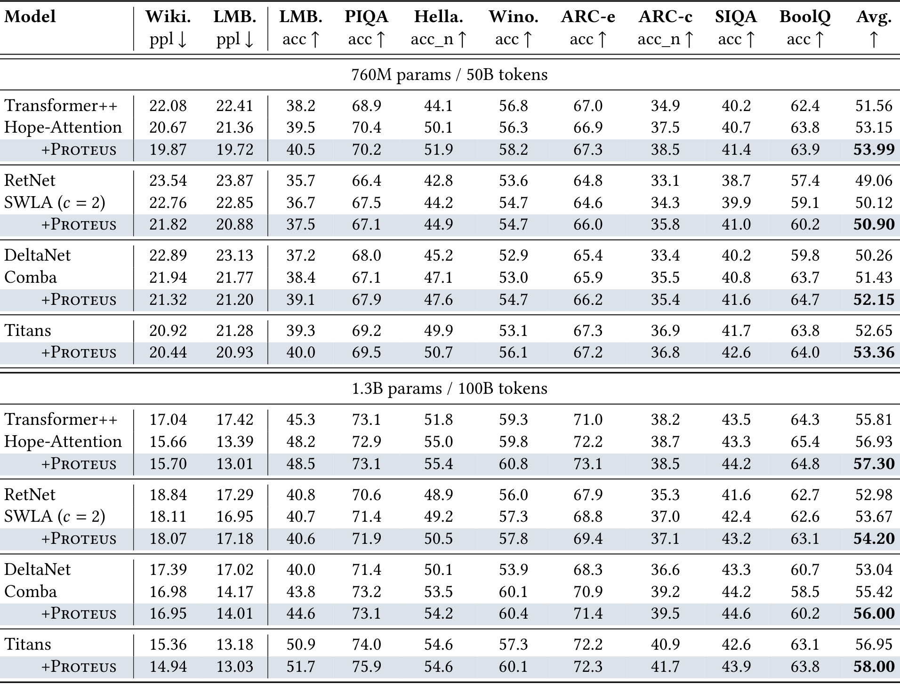
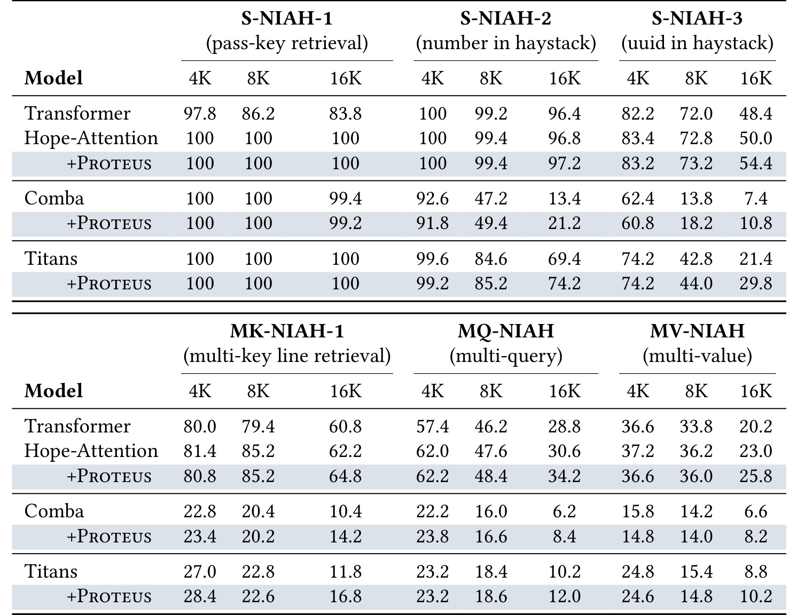
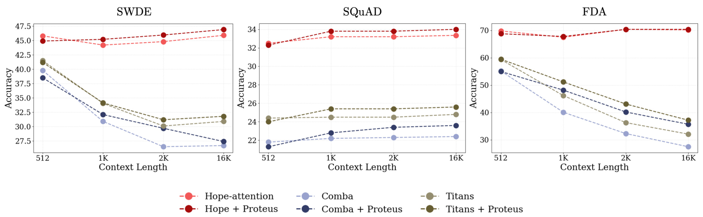
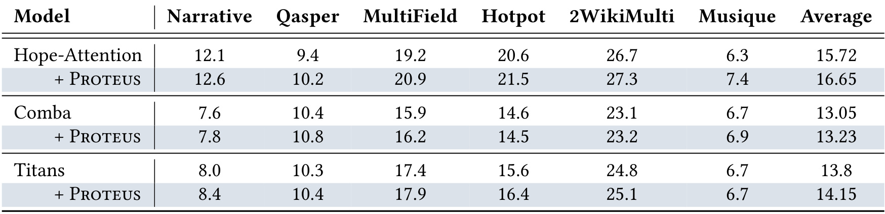
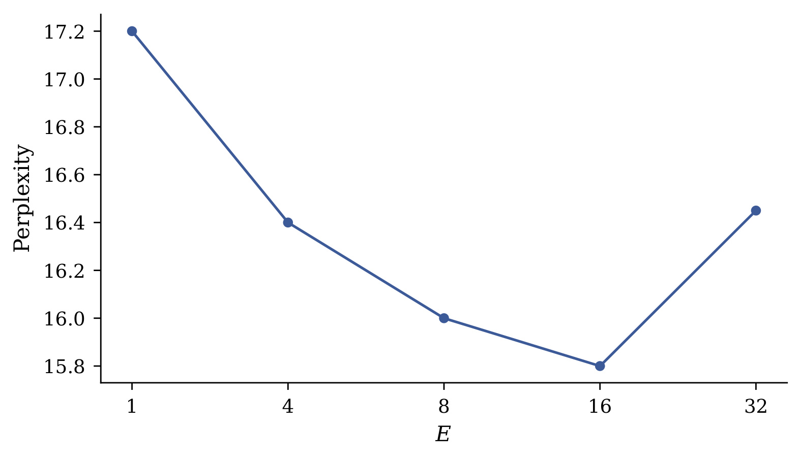
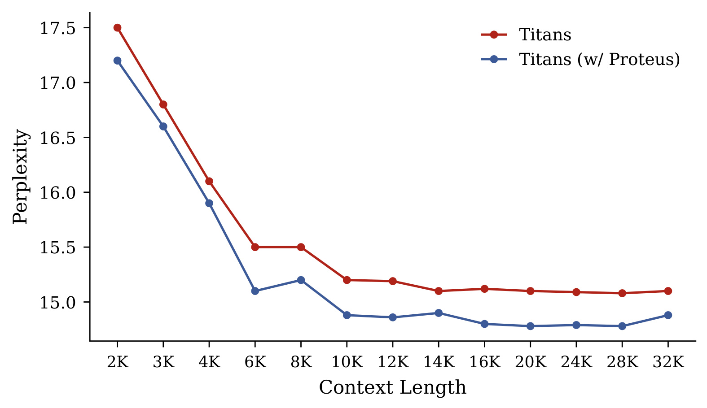

Proteus：面向长上下文序列建模的增量记忆激活
Proteus 的切入点不是再造一种新的记忆更新规则，而是重新安排既有记忆容量在序列中的“开放时间”。论文由 Reza Bayat、Ali Behrouz、Vahab Mirrokni 与 Aaron Courville 合作完成；第一作者的主要机构是蒙特利尔大学与 Mila，合作机构包括 Google Research。论文于 2026 年 8 月 17 日公开，原文入口为 arXiv:2608.16844。作者把机制接到 SWLA、Comba、Titans 和 Hope-Attention 四类架构上，考察语言建模、常识推理、长上下文检索与理解。事实包与论文首页均未提供本轮已经独立核验的代码仓库，因此开源实现状态仍记为“未核验到独立代码仓库”。
多数记忆模型从第一个 token 起就开放全部状态容量，早期内容几乎不受压缩约束，容易占据过多自由度并污染记忆；等后续信息到来时，剩余容量已不足，新的写入更容易与既有内容互相干扰或发生覆盖。
1. 背景和问题
1.1 长上下文的两种代价
标准 softmax attention 可以被理解为一种近似“无损”的外部记忆：序列中的每个 key-value 对都被保留下来，后续 query 能直接检索任何历史 token。这种做法的优势是无需把长历史压进固定状态，代价则是缓存规模随长度线性增长，注意力计算通常随序列长度呈二次增长。上下文从 8K 推到 32K 或更长时，缓存、带宽和计算都会迅速成为瓶颈。现代线性记忆、状态空间模型和测试时训练式 RNN 因而重新受到重视：它们把过去压进固定大小的隐藏状态，单 token 解码可以维持常数级状态规模，总体计算也可保持线性或次二次。
但固定状态并不是免费的“压缩包”。如果上下文长度没有上界，而状态容量固定，那么模型必须决定哪些关联被保留、哪些被覆盖。论文采用关联记忆视角：输入经投影得到 key、value 与 query，记忆在线学习 key 到 value 的映射；每个新 token 到来时，内部目标给出“惊讶”信号，状态随之更新。Hebbian rule 直接叠加新关联，delta rule 会先沿当前 key 擦除旧值再写入，Titans 又加入动量和忘记门。它们的更新细节不同，却共享一个常被忽略的假设：从序列第一步到最后一步，可参与读写的记忆参数始终相同。
1.2 静态容量为什么偏爱早期 token
在线写入带来一个时间上的不对称。序列刚开始时，记忆接近空白，早期 token 几乎没有容量竞争；如果全部参数从一开始就暴露，内部优化很容易用大量自由度逐项拟合这些 token，而不是抽取可泛化的压缩结构。随着写入累积，晚到 token 面对的却是已经被充分占用的状态：新关联需要和旧关联共享同一批坐标，更新越容易覆盖已有内容，或被已有内容干扰。于是固定容量虽然在空间上对所有 token 一视同仁，在时间上却形成了“先到先占”的偏置。
这一问题与简单遗忘不同。遗忘门解决的是旧信息该保留多少，更新规则解决的是当前误差怎样写进状态；Proteus 关注的是在位置 $t$ 到来时，到底有多少参数被允许参与读取与写入。作者把这个维度称为 effective capacity，即当前真正暴露的记忆参数数量。它与内部损失、优化器、记忆是矩阵还是 MLP 都正交，因此理论上可以叠加在多种架构上。论文的核心判断是：容量预算不仅要问“总共有多少”，还要问“什么时候开放”。
简单增加总状态也不能自动消除这种偏置。若容量翻倍但仍从第一步全部开放，早期 token 同样可能占用更多自由度，晚期信息仍需面对已经被写满的坐标；更大的状态只把饱和点向后推，并没有改变先到信息与后到信息承受的压缩压力。相反，若使用更强的全局遗忘，模型可能腾出空间，却会同时削弱真正需要长期保留的关联。Proteus 的位置调度试图在不改变总状态和原有遗忘规则的情况下，把一部分容量预留到未来。它的研究问题因此不是“更大记忆是否更好”，而是“在固定预算下，怎样让不同位置面对更合理的自由度”。
1.3 从容量控制到位置调度
经典容量控制会在整个训练过程中限制模型自由度，例如更小的瓶颈迫使自编码器保留任务相关结构。Proteus 把这个直觉移到序列位置轴：早期只允许较小的活动子空间，迫使初始上下文被浓缩；序列推进后，再逐步解锁从未被写过的参数，为晚到信息提供“新鲜容量”。前者针对早期记忆污染，后者针对后期覆盖干扰，两者必须同时成立。若活动容量始终很小，晚期 token 会被白白压缩；若一开始就开放全部容量，又回到静态基线。
这个问题与长历史推荐也有直接联系。连续用户建模常把点击、曝光、搜索和停留行为压进固定状态，早期高频事件可能占据过多表示维度，最近的意图转折或新兴趣只能写进已饱和状态。Proteus 给出的不是现成推荐指标结论，而是一种可验证假设：在不扩增状态总量的前提下，按历史进度开放表示子空间，可能让用户早期偏好被更紧凑地编码，并给后段会话意图保留未污染容量。它尤其适合与线性注意力、测试时记忆或流式用户状态结合，但是否能适应真实推荐中高度非均匀的事件密度，仍需独立实验。
推荐历史还把这个矛盾放大为两种时间尺度。跨月长期偏好通常稳定但稀疏，当前会话意图短促却决定即时点击；如果二者共享一块从头到尾完全开放的状态，大量早期曝光可能遮蔽少数关键转折。增量激活可以给后段事件保留坐标，但均匀按 token 解锁也可能把容量浪费在无信息曝光上，或在高价值事件到来前过早开放。因此论文的方法更像一个“容量时序”基线：它证明固定调度本身值得研究，却没有解决何时出现语义转折、该解锁哪一块、解锁后是否允许旧事件重写等推荐特有问题。
从研究设计上看，这个问题可被清楚证伪：若静态容量没有早期偏置，那么在总参数、更新规则和训练数据不变时，仅改变开放顺序不应稳定改善后段检索；若收益只是普通正则化，则随机或反向解锁也可能同样有效。论文完成了前一层配对比较和一个调度粒度消融，但没有系统完成后一层替代假设比较。读者应把 Proteus 看作对“开放时序有用”的有力初证，而不是对早期污染机制的最终因果识别。
论文将目标概括为两个互补约束：其一，早期容量瓶颈要足以制造压缩压力；其二，活动集合要随上下文单调扩大，最终开放全部固定状态。注意这里并没有让记忆随长度增长，也没有永久剪掉参数。总参数量和状态大小从头到尾不变，变化的是当前可见的前缀块。因此 Proteus 与 growing-memory 路线并不冲突：前者安排固定预算在训练窗口内怎样花，后者在预算耗尽后真正增加状态，两者解决的是不同尺度的问题。
2. 方法
2.1 从在线关联记忆看静态容量为何失衡
论文先把不同序列模型统一为在线关联记忆。记忆 $M$ 接收由输入 $x_t$ 投影出的 $k_t$ 与 $v_t$，通过内部目标 $\widetilde L$ 学习映射，再用 $q_t$ 读取输出。线性注意力、delta rule、Titans 或 MLP memory 的差别，可以落到目标函数、优化器和参数化上；Proteus 不改变这些选择，而是在每一步外加激活算子。这样做的重要意义是可移植性：如果某个架构已经有可靠的写入规则，Proteus 无需重写它，只需保证掩码同时覆盖写入梯度和读取路径。容量调度后的通用在线更新写成：
符号解释：$M_t$ 是处理第 $t$ 个 token 后的完整记忆，$\theta_t$ 是内部更新步长，$\widetilde L$ 是写入 key-value 关联所优化的内部损失，$G_t$ 是当前位置的激活算子，$g_t$ 是与全部记忆参数同形的二值指示量，$M_{t-1}^{(g)}$ 表示只保留活动参数后的状态，$\odot$ 是逐元素乘法。第二个等式比第一项更关键：在 $g_t=0$ 的坐标上，$M_t$ 必须严格等于 $M_{t-1}$，也就是未激活块既不能被梯度悄悄更新，也不能因状态重写而漂移。这一定义只产生一条连续在线轨迹，并非每到新位置重新优化一个独立记忆。
2.2 容量调度关联记忆：同时限制写入与读取
激活算子在 Proteus 中被实例化为元素级掩码。若只限制写入、不限制读取，尚未训练或尚未写入的块仍可能进入检索；若只限制读取、不限制写入，早期 token 仍会污染未来才应该开放的容量。论文因此把两个方向绑定：同一活动集合既决定哪些参数接收梯度，也决定 query 能看到哪些状态。具体的门控状态为：
符号解释：$M$ 表示未裁剪的固定大小记忆，$g_t$ 的 1 对应当前已解锁参数、0 对应锁定参数，$G_t(M)$ 则是可参与当前计算的有效状态。等式没有创建新的参数，也没有改变总容量；它只是把锁定坐标在读写计算中置零。对于矩阵记忆，活动单元可以是连续行或列；对于 MLP memory，可以是连续参数块。论文选连续等大块而不是任意稀疏坐标，使调度易实现，也让解锁顺序具有确定性；对应的写入把掩码直接乘在内部目标梯度上：
符号解释：$k_t$、$v_t$ 是第 $t$ 个输入的 key 与 value 表示，梯度衡量当前关联相对活动记忆的“惊讶”，$g_t$ 决定这份惊讶能够写到哪些参数，$\theta_t$ 控制写入强度。由于梯度本身是在 $M_{t-1}^{(g)}$ 上计算，锁定块既不作为当前预测上下文，也不接收更新；它们保持未污染，直到调度真正解锁。Hebbian、delta、动量或更复杂更新都可以沿相同位置施加掩码，因此作者称机制与具体 updater 正交；读取规则则使用同一活动子集：
符号解释：$q_t$ 是当前查询表示，$\operatorname{Read}$ 代表架构原有的读取算子，$y_t$ 是记忆条件化输出。线性记忆中它可能是矩阵向量乘法，MLP memory 中则是前向调用。两种写法强调同一件事：读路径只访问已经开放的容量。由此，模型在早期不能借助未来块“偷偷记住”初始 token；后续新块解锁时，它们是真正未被早期读写占用的容量。
2.3 Proteus for Memory：块级前缀门控与均匀解锁
Proteus 把总记忆分成 $E$ 个连续等大块，并按照上下文进度开放前缀。第一段 token 只能访问第一个块；到下一个区间，第二块解锁，同时第一个块继续可用；如此累积，直到全部 $E$ 块开放。这不是把每段上下文永久分配到互不交流的槽位，而是让已开放集合单调扩大：后段可以读取和改写过去块，也可以使用刚解锁的新块。 因而机制仍允许跨段整合，只是人为制造了容量开放顺序。

Figure 1 的上半部分把记忆画成随时间变化的立方体：灰色块尚未开放，浅色块是当前新激活容量，红色块是先前已经使用的容量。下半部分把长上下文切成四个 chunk，并用括号标出每段能访问的前缀。第一段只能在很窄的子空间里压缩信息；第二至第四段不仅保留过去块，还依次获得未写过的新块。图中“Locked Memory”始终存在于固定总状态中，因此总参数量没有增长；“Effective Memory Access”扩大的是当前读写范围。它直观解释了为什么门控必须同时作用于读和写：如果灰色块仍可被读取或更新，所谓 fresh capacity 就不再新鲜。图也暴露了一个潜在风险——第一段信息量若异常大，过窄的初始块可能成为不可逆瓶颈，这正是后续 $E=32$ 消融反弹的原因。令训练最大上下文为 $N$，均匀解锁区间长度定义为：
符号解释：$N$ 是制定调度时采用的最大上下文长度，论文实验中为 8K；$E$ 是块数，默认取 16；$\lfloor\cdot\rfloor$ 是向下取整；$\Delta$ 是每个解锁区间覆盖的 token 数，外层 $\max(1,\cdot)$ 防止块数大于上下文长度时步长变成 0。直觉上，增大 $E$ 会缩短每段并细化调度，但也让最初可用比例从 $1/E$ 进一步缩小，因此粒度与早期信息损失之间存在张力。第 $t$ 个位置开放多少块以及哪些参数活动，则由前缀函数给出：
符号解释：$k(t)$ 是位置 $t$ 已开放的块数，$d$ 是每块包含的参数坐标数，$j$ 是展平后的坐标索引，$\mathbf 1[\cdot]$ 在条件成立时取 1，否则取 0，$\min(E,\cdot)$ 保证块数不会超过总数。如果总维度不能整除 $E$，原文让最后一块吸收余数。训练与评估都固定使用由 8K 训练窗口得到的调度：在前 8K 内，读写容量逐步扩大；越过 $N$ 后，全部块已开放，不再继续门控。于是 16K 或 32K 的收益不是来自测试时仍在增加容量，而是前 8K 形成了更干净的压缩状态。
2.4 Extension to Hope：把同一调度作用于 MLP 参数更新
论文借助 Nested Learning 视角，把经反向传播更新的 MLP 参数也解释为一种关联记忆：训练样本的误差信号被写进参数。这样，增量激活不仅能调度测试时在线状态，也能调度模型参数在训练过程中的可更新子集。两者共用“只开放部分自由度”的原则，却运行在不同时间尺度；受门控的参数更新为：
符号解释：$\theta_i$ 是处理第 $i$ 个训练样本前的 MLP 参数，$e_i$ 是优化器提供的误差或惊讶信号，$\eta_{i+1}$ 是学习率，$g_{i+1}$ 是训练进度对应的参数掩码。只有掩码为 1 的坐标接收更新；AdamW 实现中，一阶和二阶动量也用同一掩码更新，避免锁定参数通过优化器状态间接变化。这里的“context flow”被扩展为训练数据流，因此它与前一小节按 token 调度在线记忆的时间尺度不同。Hope-Attention 的正常前向链从 key、value、query 投影开始：
符号解释：$x_t$ 是第 $t$ 个 token 的输入表示，$W_k$、$W_v$、$W_q$ 是三组投影矩阵，输出 $k_t$、$v_t$、$q_t$ 分别服务于注意力匹配、内容聚合和查询。Proteus 并不修改这些投影的语义，也不改变注意力本身；论文展示这组公式是为了明确 Hope 的正常前向链路，并把“训练时哪些 MLP 参数可更新”和“推理时 token 怎样通过网络”分开。随后注意力汇总截至当前位置的历史：
符号解释：$\{k_i\}_{i=1}^{t}$ 与 $\{v_i\}_{i=1}^{t}$ 是截至当前位置的键和值集合，$q_t$ 是当前查询，$\operatorname{Attn}$ 产生上下文表示 $h_t$。这个输出随后进入多频率 MLP 链。对 Hope 的 Proteus 扩展并不在推理时屏蔽注意力历史，而是在训练期间逐步开放 MLP 参数更新，因此不能把它误写成另一种 token 级稀疏路由。Hope 最终用更新频率不同的 MLP block 串联处理 $h_t$：
符号解释：$f_1,\ldots,f_k$ 是各 MLP block 的更新频率，$\operatorname{MLP}^{(f_\ell)}$ 表示第 $\ell$ 个按该频率训练的块，$h_t$ 是注意力输出，$y_t$ 是最终序列表示。Proteus 保留这条前向计算与各块频率，只给它们的参数更新叠加渐进掩码。训练结束后模型使用已经学到的完整参数推理；因此“无额外成本”在论文证据中首先意味着不新增参数和记忆状态。原文没有提供独立的延迟、FLOPs 或门控 kernel 表格，不能进一步断言所有实现都具有零墙钟开销。
3. 实验结果
3.1 设置：四个架构、两种规模与多层任务
作者把 Proteus 接到 Hope-Attention、SWLA、Comba 与 Titans 四个模型家族，并以 Transformer++、RetNet、DeltaNet 等作为参照。所有模型在 FineWeb 上使用 8K 训练窗口；760M 参数模型训练 50B token，1.3B 参数模型训练 100B token。默认分块数为 $E=16$，优化器为 AdamW，学习率 $4\times10^{-4}$，cosine annealing，batch size 为 0.5M token，weight decay 为 0.1。这个设置的优点是 backbone 配对比较明确：每个“+Proteus”都应先和同一模型、同一规模的基线比，而不是跨架构挑最高分。
评测分三层。第一层用 Wikitext 和 LAMBADA 困惑度，以及 LAMBADA、PIQA、HellaSwag、WinoGrande、ARC-Easy、ARC-Challenge、SIQA、BoolQ 的零样本准确率，检查标准 8K 范围内的语言建模与常识能力。第二层用六类 NIAH 合成检索，以及 SWDE、SQuAD、FDA 的长度曲线，检查信息在 4K、8K、16K 乃至更长上下文中的保留。第三层用 LongBench 的 Narrative、Qasper、MultiField、Hotpot、2WikiMulti、Musique，检查检索收益能否转化为长文理解和多跳问答。附录再对 $E$ 与 token 位置做机制分析。
这个实验矩阵有两个值得肯定的控制。其一，“+Proteus”与原 backbone 共享模型规模、训练 token 和数据，平均提升不容易被额外参数解释；其二，8K 训练后测试 16K/32K 能把训练窗口内的压缩质量与测试时继续解锁区分开。它也有缺口：正文没有报告随机种子数、置信区间、训练吞吐或峰值显存，也没有把均匀调度与随机解锁、倒序解锁、学习型门控并列比较。因此主结果能回答“加这个调度是否有帮助”，但对“为什么帮助”和“是否优于其他容量正则”只提供间接证据。
3.2 语言建模与常识推理：平均收益稳定，单格并非全胜

Table 1 应按每组三行或两行成对阅读。760M 下，Hope-Attention 加入 Proteus 后平均准确率从 53.15 升到 53.99，SWLA 从 50.12 到 50.90，Comba 从 51.43 到 52.15，Titans 从 52.65 到 53.36；四组 Wikitext 与 LAMBADA 困惑度也都下降。Hope-Attention+Proteus 在该规模取得最低的 19.87/19.72 困惑度和最高 53.99 平均准确率。1.3B 下，Titans+Proteus 达到表内最好结果：Wikitext 14.94、LAMBADA 13.03、平均准确率 58.00，对应基线平均 56.95。跨四类更新规则与两种规模都能提升平均分，支持“调度维度与 backbone 正交”的主张，而不是某个模型专属技巧。
不过“平均提升”不能改写成“所有单项都提升”。760M Hope 的 PIQA 从 70.4 轻微降到 70.2；Titans 的 ARC-Easy/ARC-Challenge 从 67.3/36.9 到 67.2/36.8。1.3B Hope 的 Wikitext 困惑度 15.66 变为 15.70，BoolQ 65.4 变为 64.8；SWLA 的 LAMBADA 困惑度由 16.95 变为 17.18，LAMBADA accuracy 也从 40.7 到 40.6。更准确的结论是：Proteus 在配对平均值和大多数指标上呈一致正向趋势，但不同任务仍会因早期压缩或 backbone 特性出现小幅代价。
这些结果发生在训练窗口内，说明收益并不只来自长度外推。作者的解释是早期瓶颈让状态学到更可泛化的压缩，即便测试长度仍为 8K，也能改善语言建模。证据的局限是表中没有多随机种子方差或显著性区间，许多单项差距只有 0.1-1 个点；因此跨八组模型配对的方向一致性比任一小格提升更有说服力，绝对幅度则不宜过度解读。
规模变化也提供了一个细节判断。760M 时四个 backbone 的平均提升约为 0.71-0.84；1.3B 时 Hope、SWLA、Comba、Titans 分别提升 0.37、0.53、0.58、1.05，并没有随参数量呈统一放大或缩小。Titans 在大规模上获益最大，但 Hope 的增幅反而变小。这意味着 Proteus 的效果可能同时取决于状态更新规则、基线饱和程度和容量相对任务难度，而不只是模型越大越需要调度。若后续只展示单一规模，容易把 backbone 特性误当成普遍 scaling law。
3.3 NIAH：收益集中在更长、更难、基线更弱的区域

Table 2 把单针任务分成 pass-key、数字、UUID 三种难度，并加入 multi-key、multi-query、multi-value。最简单的 S-NIAH-1 在 Hope 与 Titans 上几乎已经饱和，Proteus 多数持平；真正拉开差距的是 16K 困难区。Titans 的 S-NIAH-3 从 21.4 提到 29.8，S-NIAH-2 从 69.4 到 74.2；Comba 的 S-NIAH-2 从 13.4 到 21.2、S-NIAH-3 从 7.4 到 10.8。在多针 16K 上，Titans 的 MK-NIAH-1 从 11.8 到 16.8，Hope 的 MQ-NIAH 从 30.6 到 34.2、MV-NIAH 从 23.0 到 25.8。增益集中在状态最容易饱和的区域，与“后期新容量减少干扰”预期吻合。
表中同样保留了重要反例。Comba 在 4K S-NIAH-2 从 92.6 降到 91.8、S-NIAH-3 从 62.4 降到 60.8；Hope 在 4K MK 与 MV 略降，Titans 在 8K MK、4K/8K MV 也有小幅回落。短上下文或简单任务中，基线本来就有足够容量，早期门控未必带来收益，甚至可能造成轻微压缩损失。作者在局限中明确承认这一点：Proteus 最适用于长上下文容量真正成为瓶颈的区域，而不是普遍提高所有检索难度。
还有一个机制上很关键的事实：调度在 8K 训练窗口内已经结束，16K 时没有新块继续解锁。因此 16K 改善不能被解释为“测试时多给了容量”；总状态从未增加，超过 8K 时也全部开放。更合理的解释是前 8K 在受控容量下形成了较少污染、更紧凑的状态，使后续写入和读取的退化更慢。这一点让 NIAH 不只是性能表，也成为早期压缩能否留下长期状态优势的间接检验。
3.4 真实检索与 LongBench：长度趋势清楚，任务迁移幅度不均

Figure 2 给出 SWDE、SQuAD、FDA 三个任务从 512 到 16K 的曲线。Hope-Attention 的基线本来较强，Proteus 曲线在各长度大体更高，SQuAD 的优势尤其稳定。Comba 与 Titans 在 SWDE/FDA 上随长度增加明显下滑，加入 Proteus 后 2K-16K 区域普遍被抬高；FDA 的 Comba 曲线在 16K 附近仍然很低，但相对基线保住了更多准确率。重要的不是每个点都出现巨大绝对增益，而是两条配对曲线的间距通常随长度扩大：当上下文越长、固定记忆越容易被早期内容占据，增量激活的价值越明显。这比单一 16K 终点更贴近论文提出的因果机制。
三幅子图也提醒我们 backbone 的失效模式不同。Hope 在 FDA 上几乎维持高位，Proteus 的提升空间较小；Comba 和 Titans 的基线会随长度急降，调度只能缓解而不能消除退化。由此不能推出 Proteus 让固定状态拥有注意力式无损记忆，只能说在相同总容量下，它改善了信息写入的时间分配。曲线没有给出误差带，数据点也只覆盖有限长度，因此“收益随长度增长”应理解为本文三组检索实验中的一致趋势，而非任意任务和任意长度上的定理。

Table 3 把评测从直接召回扩展到六类长文理解。Hope-Attention 平均分从 15.72 提到 16.65，Comba 从 13.05 到 13.23，Titans 从 13.80 到 14.15；Hope 在 Narrative、Qasper、MultiField、Hotpot、2WikiMulti、Musique 六项都提升，增幅最大的包括 MultiField 19.2→20.9 和 Musique 6.3→7.4。Comba 与 Titans 的平均提升更小：Comba 的 Hotpot 14.6→14.5，Titans 的 Musique 6.7→6.7。这说明更好的状态保留通常能帮助长文任务，但“检索更稳”并不会自动等比例转化为推理或多跳问答能力。
综合 Figure 2 与 Table 3，证据最强的层次是 recall robustness 和长度外推；对通用长上下文理解的支持则较温和。论文没有分别拆解检索、阅读理解与推理错误，也没有与同预算的其他容量调度策略比较。工程上若要迁移到推荐排序，应先把指标分成“历史事件还能否被召回”“召回后能否正确聚合”“最终排序是否改善”三层，避免把中间状态的保持直接当作业务效果。
3.5 分块数与 token 位置：调度存在最佳强度

Figure 3 中 $E=1$ 等价于从第一步开放全部记忆，因此是干净的静态基线。验证困惑度约从 17.2 降到 $E=4$ 的 16.4、$E=8$ 的 16.0，并在 $E=16$ 达到约 15.8 的最低点；继续增到 $E=32$ 时反而回升到约 16.45。这个 U 形趋势支持作者提出的“压缩与干扰”张力：块数太少，早期容量仍过宽，压缩压力不足；块数太多，最初 token 只能访问 $1/32$ 状态，任务相关信息可能在解锁前已经被不可逆丢失。默认 $E=16$ 有实验依据，但图中只展示一个验证设置，尚不能证明所有架构、数据分布与上下文长度都共享同一最优值。曲线只含五个离散点，最低点附近没有更细粒度搜索，因此也不能排除 $E=12$ 或 $E=20$ 更优；它证明的是非单调性和中等粒度优势，而不是精确最优超参数。

Figure 4 比较 Titans 与 Titans+Proteus 从 2K 到 32K 的逐位置困惑度。蓝色 Proteus 曲线在所有采样位置都低于红色基线，说明早期瓶颈没有用“牺牲前段质量”换取末段收益；差距从 2K 开始存在，在 6K-8K 附近扩大，正好对应调度仍在解锁新块并于 8K 完成的阶段。8K 以后两条曲线都趋于平缓，差距缓慢缩小但一直保留到 32K。这个形态与机制解释相容：优势在逐步开放期间累积，调度结束后不再增加，却由更干净的状态继续支付红利。
两张附录图共同给出比主结果表更接近机制的证据：$E=1$ 到中等块数的改善说明“是否调度”重要，$E=32$ 的反弹说明并非单纯稀疏或正则越强越好；逐位置曲线则排除了一个直观担忧，即早期 token 因容量太小而整体更差。不过它们仍不足以唯一证明“记忆污染”就是因果来源，因为论文没有直接测量各块占用、状态秩、旧新信息梯度冲突或覆盖率。未来复现若能记录这些内部量，会比困惑度曲线更直接地验证假说。
还需要注意附录分析主要围绕 Titans 与单一验证困惑度展开。分块最优点是否会随模型规模、训练窗口 $N$、数据域或更新规则迁移，正文没有二维网格；逐位置曲线也没有拆分文档边界、长距离依赖类型和 token 频率。若 $E=16$ 只是在当前 8K/FineWeb 配置下恰好匹配状态容量，把它固定带到 32K 训练或稀疏用户事件流中可能并不稳健。更完整的实验应联合扫描 $E$、$N$ 与初始活动比例，而非把块数当作一次性常数。
4. 总结
4.1 我的判断与迁移价值
Proteus 最有价值的地方，是把“记忆大小”拆成总容量与活动容量两个变量。它不改变关联记忆内部损失，不要求新增参数，也没有把状态随长度扩张；只用一个确定的前缀掩码安排读写自由度。四类 backbone、两种规模的配对平均值，以及 NIAH/真实检索中随长度放大的收益，构成了相互一致的证据链。尤其 $E=1\rightarrow16\rightarrow32$ 的非单调消融，使论文不止停留在“加门控有正则作用”的宽泛描述，而是显示早期压缩确实存在强度上限。
对长序列推荐的启发是：流式用户状态可能也存在先到行为占满表示空间、近期意图难写入的问题。可以把用户历史按事件位置或时间窗口切块，逐步开放线性记忆/MLP memory 的子空间，再分别测长期兴趣召回、短期意图捕捉和最终排序指标。更值得尝试的不是原样照搬均匀调度，而是把开放速度与事件密度、兴趣漂移或 surprise 关联：稳定阶段保持窄容量，显著意图转折时提前解锁新块。但在离线推荐里这样做可能与截断、负采样和时间泄漏交互，必须用严格时间切分验证。
4.2 局限、风险与后续跟进
主要局限与风险至少有四项：
- 调度完全由位置和手工 $E$ 决定，没有利用内容难度、事件密度或记忆更新规则；均匀 token 流上的最优点未必适用于文档边界或突发兴趣。
- Hope/MLP 参数扩展只在一个架构上作为 proof of concept 展示，不能据此声称所有参数子集训练都受益；训练时冻结与 AdamW 状态的实现细节也可能影响结果。
- 论文强调不增加参数和记忆，但没有独立给出端到端延迟、kernel 利用率、通信和掩码开销；稠密实现若仍计算被遮蔽坐标，墙钟收益未必存在。
- 主表缺少多随机种子方差和显著性区间，LongBench 某些单项持平或下降；“静态容量次优”只能限定在本文架构、训练预算和任务范围内。
- 机制解释主要依赖输出指标，没有直接观测状态占用、梯度冲突、可恢复信息量或各块被写入的语义，因此“早期污染减少”仍是与证据相容、但未被唯一识别的解释。
后续建议优先做三组实验。第一，复现 Titans 的 $E\in\{1,4,8,16,32\}$ 与逐位置困惑度，同时记录每块梯度范数、状态秩和旧/新 token 检索准确率，直接检验污染与干扰。第二，将均匀前缀调度与随机块顺序、反向调度、固定窄容量、学习型门控比较，分清收益来自“逐步开放”还是一般正则。第三，在真实长历史推荐上把召回保持、近期兴趣写入、排序收益、延迟与状态大小分开报告，并检查冷启动用户和高活跃用户是否需要不同 $E$。若后续出现官方代码，还应核验 mask 是否真正跳过计算、Hope 的 AdamW moment 如何冻结，以及评估超过 8K 时是否严格沿用训练调度。
总体而言，Proteus 提供了一个小而清楚的研究变量：固定容量不必静态暴露，记忆的开放时序本身可以被设计。当前证据足以支持它作为跨多种神经记忆架构的有希望插件，也足以启发长历史用户建模；但关于最优调度、计算成本和因果机制的结论仍需更直接的内部测量与在线实验。
如果只能保留一个复现优先级，我会先验证“配对状态内部发生了什么”，而不是再堆更多下游榜单：在相同 token 上比较每个块的写入量、早晚信息可恢复性和梯度冲突，才能判断 Proteus 学到的是更紧凑的语义摘要，还是仅仅获得了一种训练正则。这个区分会直接决定它该被推广为通用记忆调度器，还是只作为特定训练配方使用。